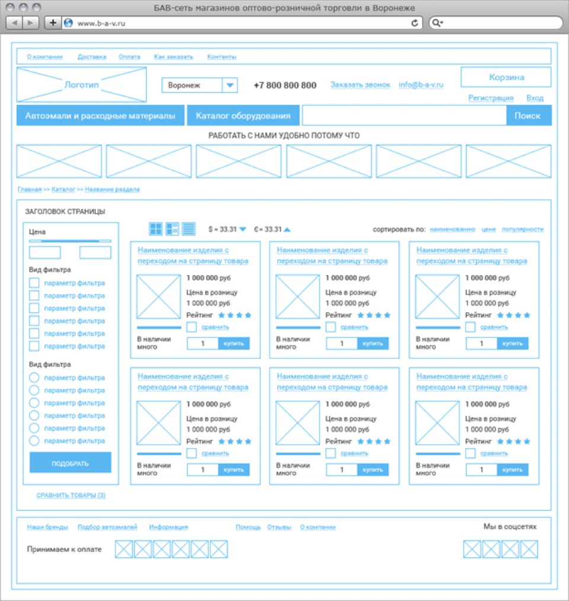
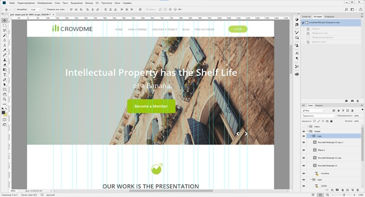
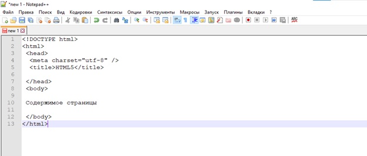
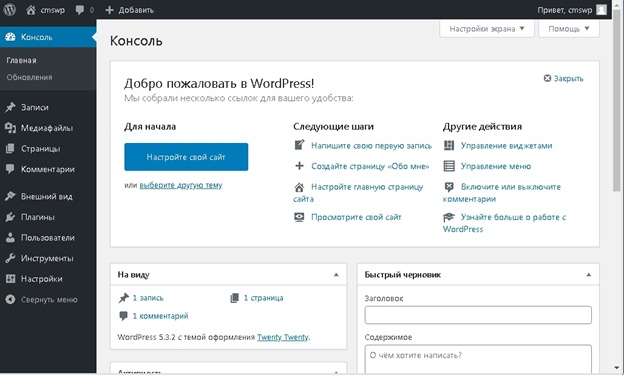

Любой веб-сайт представляет собой достаточно сложный, состоящий из модулей продукт, разрабатываемый, как правило, одновременно несколькими специалистами.
То многообразие технологий, используемых на сегодняшний для создания веб-ресурсов, порой удивляет и создает иллюзию невозможности изучения их всех. На самом же деле, для успешного освоения технологии необходимо однозначное понимание предметной области. На занятии мы будем изучать, одну из таких областью, а именно веб-разработку.
Разработка веб-сайта, как мы уже говорили, процесс достаточно сложный и подразумевающий применение большой совокупности технологий. Многообразие профессий: веб-дизайнеры, frontend-разработчики, backend-разработчики, проектировщики, проект-менеджеры и т.д. свидетельствует о детальной и глубокой проработке каждого этапа разработки.
Первый этап – сбор требований к будущему ресурсу, определение формата ресурса (корпоративный сайт, интернет-магазин и т.д.).
Здесь важным аспектом является определение целевой аудитории. Именно на этом этапе задаются первые и фундаментальные задачи будущего проекта. Следующий этап не менее значительный, связанный с созданием структуры веб-страницы т.е. созданием прототипа.
Прототип – это схематическое изображение отдельной страницы или сайта в целом. Пример прототипа (Рис.1)

Рисунок 1.
Единого требования к оформлению прототипов и ПО для их разработки на сегодняшний день не существует. На основе прототипа веб-страницы строится дизайн. Прототип и техническое задание уже практически в полной мере иллюстрируют функционал будущего веб-сайта.
Далее важным этапом становится разработка дизайна страницы. Его визуальное представление подготавливается в графическом редакторе. Наиболее популярные графические редакторы для разработки дизайна: Adobe Photoshop, Sketch, Adobe XD, Figma. Последний является онлайн-редактором, строго направленным на разработку интерфейсов.
HTML-верстальщику необходимо знать базовый функционал данных редакторов, чтобы иметь возможность «брать» необходимые элементы интерфейса для верстки, а также определять размеры требуемых элементов, в т.ч. блоков. Пример дизайна веб-страницы в Adobe Photoshop (Рис. 2).

Рисунок 2.
После того как дизайн готов, верстальщик приступает к процессу верстки, создает корневой каталог будущего веб-сайта, главную страницу и каталоги для вложения медиафайлов.
Далее, запускаем текстовый редактор программного кода, например notepad++ (популярный редактор, отличается наличием открытого исходного кода для Windows и подсветки синтаксиса, а также поддержкой открытия нескольких десятков форматов), и размещаем первый код, минимально необходимый для корректной работы веб-страницы (Рис. 3).

Рисунок 3.
Следующий этап – это разработка программной части. На данном этапе реализация может быть «с нуля» и осуществлятся на языке программирования для веб-технологий, таковыми являются php, JavaScript, Java и т.д. Также можно воспользоваться готовыми платформами (Системами Управления Контентом - CMS), примерами таких систем являются: WordPress, Joomla, Drupal, 1C Bitrix и др. Данные системы реализованы на языке php. Преимуществом их использования является готовый интерфейс административной панели и наличие стандартного функционала: создание страниц, публикация новостей, создание форм обратной связи и прочее. На рисунке 4 представлен интерфейс административно панели CMS WordPress.

Рисунок 4.
Системы управления контентом не просто расширяемы за счет готовых модулей (платных и бесплатных), но и также пригодны к изменению программной части специалистом. Разработчики могут дорабатывать существующие модули или создавать новые. Принцип модульности в CMS позволяет создавать проекты различной сложности от небольшого статичного веб-сайта до сложных интернет-магазинов.
После того как выполнена программная часть, следует переходить к тестированию и запуску проекта. Процесс тестирования достаточно сложный и в крупных проектах может занимать 20–30% от всего срока разработки.
По одному из определений техническая поддержка или техподдержка — понятие, обобщающее собой и охватывающее множество услуг, посредством которых предприятия и организации обеспечивают помощь пользователям технологичных продуктов и услуг, например таких, как мобильные и стационарные телефоны, телевизоры, компьютеры, программное обеспечение, а также других электронных и механических товаров и услуг.
Особенно крупные проекты с большим количеством пользователей на практике нуждаются в постоянной технической поддержке. Требуется исправлять неполадки, возникающие в процессе использования, обновлять платформу, защищать от взломов и процесс повышения отказоустойчивости становится непрерывным. За данным процессом мы можем наблюдать на примере операционных систем, как десктопных, так и мобильных. Например, ОС Windows постоянно «принимает» обновления от сервера. Данные обновления изготавливают множество сотрудников компании Microsoft на основе тестов и отчетов, полученных от пользователей.
Всегда стоит учитывать, что новое «полученное» обновление может наоборот дестабилизировать работу системы, т.к. каждая система работает на отдельном устройстве с собственной конфигурацией и управляется различными пользователями. Этими факторами и обусловлены требования к постоянной технической поддержке ресурсов.